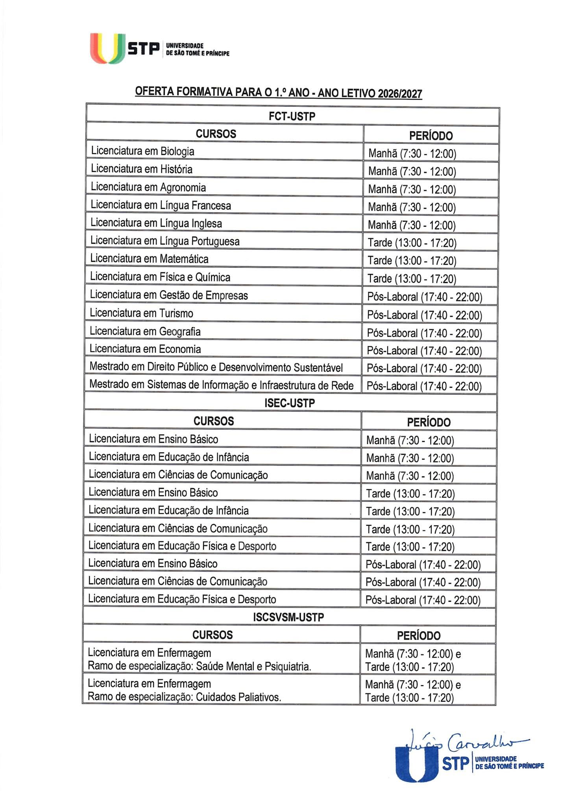
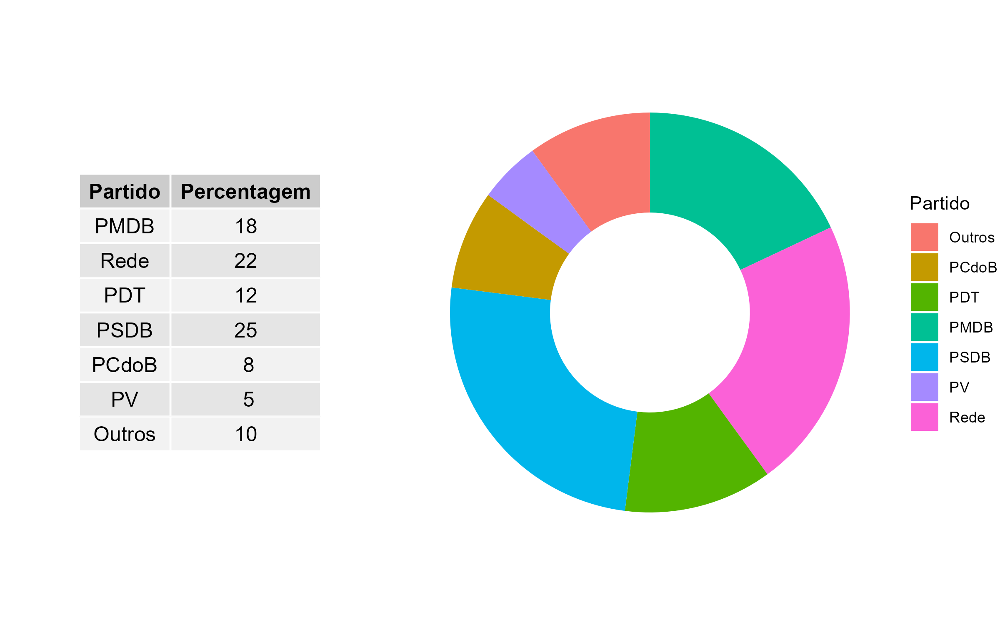

10 Ago 2026
Workshop de Linguagem R
Sessão prática sobre modelação e testes de hipóteses na próxima semana.

Publicados os horários de atendimento e calendário das aulas do 2.º Ciclo.

As Inscrições decorrem até ao dia 28 de Agosto.
Sessão prática sobre modelação e testes de hipóteses na próxima semana.

Abertura de candidaturas para acompanhamento em Ciências Naturais.

Novos manuais de Bioestatística e Metodologia Científica no repositório.

Conteúdos demonstrativos e resolução de exercícios no canal.

Atendimento presencial e online mediante agendamento prévio.

Pauta final das submissões do projeto de BioEstatística disponível.

Divulgação dos resumos e apresentações das conferências.
Exploração dos ecossistemas, sustentabilidade ambiental, corpo humano e biodiversidade.
Compreensão da geografia humana, dinâmicas demográficas, cidadania e organização da sociedade atual.
Visão geral das unidades curriculares lecionadas.
Conheça os cursos de licenciatura e pós-graduação disponíveis na USTP, distribuídos por várias áreas do saber.
Ver CursosInformações úteis para os estudantes, incluindo regulamentos, direitos e deveres, associações e oportunidades disponíveis.
Área do EstudanteConheça as oportunidades de apoio financeiro disponíveis para os estudantes, incluindo bolsas de estudo e outras ajudas.
Ver BolsasConheça as oportunidades de apoio financeiro disponíveis para os estudantes, incluindo bolsas de estudo e outras ajudas.
Ver BolsasEstudo descritivo de dados, medidas de tendência central e dispersão.
Aprofundamento de inferência estatística e testes de hipóteses.
Aplicação de métodos estatísticos em ciências biológicas e de saúde.
Descubra como analisar e resumir as características de uma única variável. Explore distribuições de frequência, gráficos explicativos e tabelas organizadas para compreender o comportamento dos seus dados de forma isolada.
Explorar VariávelAcesse as principais métricas para sintetizar seus conjuntos de dados. Calcule e interprete com facilidade medidas de tendência central (média, mediana e moda) e de dispersão (variância, desvio-padrão e amplitude).
Ver MedidasAnalise a relação e a dependência entre duas variáveis distintas. Identifique padrões, correlações, diagramas de dispersão e tabelas de contingência para cruzar informações com precisão.
Analisar Relações| 5,7 | 6,5 | 6,9 | 8,3 | 8,0 | 4,2 | 6,3 | 7,4 | 5,8 | 6,9 |
| Período | Nota | Peso |
|---|---|---|
| 1º Bimestre | 4.5 | 1 |
| 2º Bimestre | 7.0 | 2 |
| 3º Bimestre | 5.5 | 3 |
| 4º Bimestre | 6.5 | 4 |
| Ativo | Retorno (%) | % Investimento |
|---|---|---|
| Banco do Brasil ON | 1.05 | 10 |
| Bradesco PN | 0.56 | 25 |
| Eletrobrás PNB | 0.08 | 15 |
| Gerdau PN | 0.24 | 20 |
| Vale PN | 0.75 | 30 |
| Notas | 1 | 2 | 3 | 4 | 5 | 6 | 7 | 8 | 9 | 10 |
|---|---|---|---|---|---|---|---|---|---|---|
| N.º Entrevistados | 9 | 12 | 15 | 18 | 24 | 26 | 5 | 7 | 3 | 1 |
Espaço dedicado aos conteúdos computacionais, inferência estatística e modelação avançada aplicada à investigação científica e académica.
Conheça os cursos de licenciatura e pós-graduação disponíveis na USTP, distribuídos por várias áreas do saber.
Ver CursosInformações úteis para os estudantes, incluindo regulamentos, direitos e deveres, associações e oportunidades disponíveis.
Área do EstudanteConheça as oportunidades de apoio financeiro disponíveis para os estudantes, incluindo bolsas de estudo e outras ajudas.
Ver BolsasConheça as oportunidades de apoio financeiro disponíveis para os estudantes, incluindo bolsas de estudo e outras ajudas.
Ver BolsasConceitos fundamentais de probabilidade aplicados à análise estatística.
Conheça os cursos de licenciatura e pós-graduação disponíveis na USTP, distribuídos por várias áreas do saber.
Ver CursosInformações úteis para os estudantes, incluindo regulamentos, direitos e deveres, associações e oportunidades disponíveis.
Área do EstudanteConheça as oportunidades de apoio financeiro disponíveis para os estudantes, incluindo bolsas de estudo e outras ajudas.
Ver BolsasConheça as oportunidades de apoio financeiro disponíveis para os estudantes, incluindo bolsas de estudo e outras ajudas.
Ver BolsasEstudo de variáveis aleatórias discretas e contínuas.
Análise de modelos de distribuição teóricos e empíricos.
Métodos de seleção e recolha de dados representativos.
Conheça os cursos de licenciatura e pós-graduação disponíveis na USTP, distribuídos por várias áreas do saber.
Ver CursosInformações úteis para os estudantes, incluindo regulamentos, direitos e deveres, associações e oportunidades disponíveis.
Área do EstudanteConheça as oportunidades de apoio financeiro disponíveis para os estudantes, incluindo bolsas de estudo e outras ajudas.
Ver BolsasConheça as oportunidades de apoio financeiro disponíveis para os estudantes, incluindo bolsas de estudo e outras ajudas.
Ver BolsasEstruturação e caracterização de amostras populacionais.
Critérios estatísticos para o cálculo do tamanho ideal da amostra.
Generalização de resultados obtidos a partir de amostras para a população.
Conheça os cursos de licenciatura e pós-graduação disponíveis na USTP, distribuídos por várias áreas do saber.
Ver CursosInformações úteis para os estudantes, incluindo regulamentos, direitos e deveres, associações e oportunidades disponíveis.
Área do EstudanteConheça as oportunidades de apoio financeiro disponíveis para os estudantes, incluindo bolsas de estudo e outras ajudas.
Ver BolsasConheça as oportunidades de apoio financeiro disponíveis para os estudantes, incluindo bolsas de estudo e outras ajudas.
Ver BolsasMétodos para obtenção de estimadores pontuais de parâmetros.

| Tipo Sanguíneo | Doadores ($F_i$) | $Fri$ (%) | $Fi_{ac}$ | $Fri_{ac}$ (%) |
|---|---|---|---|---|
| A+ | 15 | 25 | 15 | 25 |
| A- | 2 | 3.33 | 17 | 28.33 |
| B+ | 6 | 10 | 23 | 38.33 |
| B- | 1 | 1.67 | 24 | 40 |
| AB+ | 1 | 1.67 | 25 | 41.67 |
| AB- | 1 | 1.67 | 26 | 43.33 |
| O+ | 32 | 53.33 | 58 | 96.67 |
| O- | 2 | 3.33 | 60 | 100 |
| Total | 60 | 100 | — | — |
Em repetições repetidas do processo de amostragem, aproximadamente $100(1 - \alpha)$% dos intervalos construídos conterão o verdadeiro valor de $p$.Diferentemente da estimação pontual — que fornece apenas um único valor como estimativa — a estimação por intervalo fornece um conjunto de valores plausíveis para o parâmetro de interesse, permitindo quantificar a incerteza associada à estimativa. Seja $\theta$ um parâmetro populacional e $\hat{\theta}$ um estimador de $\theta$. Com base na distribuição de probabilidade de $\hat{\theta}$, é possível construir um intervalo da forma: $$ \hat{\theta}_1 \leq \theta \leq \hat{\theta}_2, $$ tal que a probabilidade de o intervalo conter o verdadeiro valor do parâmetro seja $(1 - \alpha)$, denominado nível de confiança. O valor $\alpha \in (0,1)$ representa o nível de significância, isto é, a probabilidade de o intervalo não conter o parâmetro. Então $ 1 - \alpha = \text{nível de confiança}. $ Um intervalo de confiança (IC) é, portanto, um intervalo aleatório que, em repetidas amostragens, contém o verdadeiro valor do parâmetro em aproximadamente $100(1 - \alpha)\%$ dos casos. Formalmente, se $U$ e $V$ são estatísticas tais que $$ P\left[(U < \theta < V )\mid \theta\right] = 1 - \alpha, $$ então $(U, V)$ é um intervalo de confiança para $\theta$ com nível $100(1 - \alpha)\%$. A amplitude do intervalo está diretamente relacionada à incerteza da estimação: intervalos mais largos indicam maior incerteza, enquanto intervalos mais estreitos indicam maior precisão.
Testes de hipóteses e tomada de decisão estatística.
Repositório de materiais de apoio pedagógico, guias metodológicos e referências bibliográficas.
Conheça os cursos de licenciatura e pós-graduação disponíveis na USTP, distribuídos por várias áreas do saber.
Ver CursosInformações úteis para os estudantes, incluindo regulamentos, direitos e deveres, associações e oportunidades disponíveis.
Área do EstudanteConheça as oportunidades de apoio financeiro disponíveis para os estudantes, incluindo bolsas de estudo e outras ajudas.
Ver BolsasConheça as oportunidades de apoio financeiro disponíveis para os estudantes, incluindo bolsas de estudo e outras ajudas.
Ver BolsasSumários detalhados das matérias lecionadas.
| Nome do Ficheiro | Data de Modificação | Tamanho |
|---|---|---|
| ../ | - | - |
| Apendice_B.html | 15-Feb-2018 00:40 | 992307 |
| Tabela t-Student.pdf | 15-Feb-2018 00:41 | 980182 |
| ComandosR_ASA.html | 06-Mar-2018 18:44 | 1022208 |
Segue uma distribuição $t$ de Student com $n - 1$ graus de liberdade. Consulte a Tabela t-Student.
Abordagens pedagógicas centradas no aluno.
Lista de compilações científicas e manuais.
Exemplo de uma função polinomial: \( f(x) = x^3 - 4x^2 + 5x - 2 \).
$$ x = \frac{-b \pm \sqrt{b^2 - 4ac}}{2a} $$
pnorm(35, mean = 40, sd = 2, lower.tail = FALSE)Para propostas de funções docentes ou assuntos administrativos, entre em contacto: